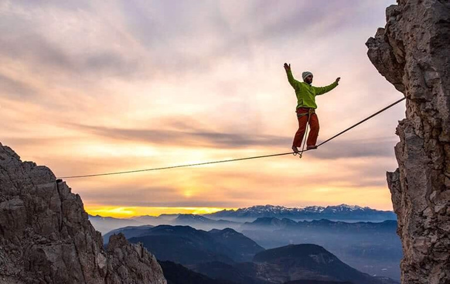

Слэклайн
Слэклайн – это новомодный вид спорта. Некоторые разновидности слэклайна считаются экстремальными. Слэклайн – это хождение по канату или стропе, которую закрепляют между неподвижными объектами. По-другому слэклайн можно назвать стропохождением.
В канатоходстве ходят по жестко натянутому канату. А в слэклайне используют слабое натяжение стропы. При слабом натяжении процесс хождения по стропе сильно меняется. Стропы бывают разной структуры и ширины, что влияет на процесс хождения.
Слэклайн появился в США. В восьмидесятых годах XX века, два друга гуляли около местной парковки. Там они придумали себе развлечение – ходить по цепным ограждениям. Со временем цепи были заменены на специальные стропы, а о слэклайне начали узнавать по всему миру.

Один из друзей – Скотт Бэлком, выработал свой стиль хождения и придумал школу Скотта. В этом стиле используют тонкую и слабо натянутую стропу. Скотт первым преодолел хайлайн (хождение на большой высоте) в долине Йосемити (водопад в горах Калифорнии). Сейчас Скотт ходит по стропам длинной десятки метров, а шириной всего сантиметр (супертэйп). Ходить по таким стропам очень сложно.
Другой товарищ – Дэррен Картер. Он тренировался в той самой долине Йосемити и вторым преодолел хайлайн в долине. Так Дэррен полюбил хайланы, а свой стиль назвал школой Дэррена. В Книге Рекордов Гиннеса есть запись о пройденном им хайлайне в 1998 году. Сегодня Дэррен считается самым лучшим слэйкером. Его последователем стал Дин Поттер, известный американский скалолаз.